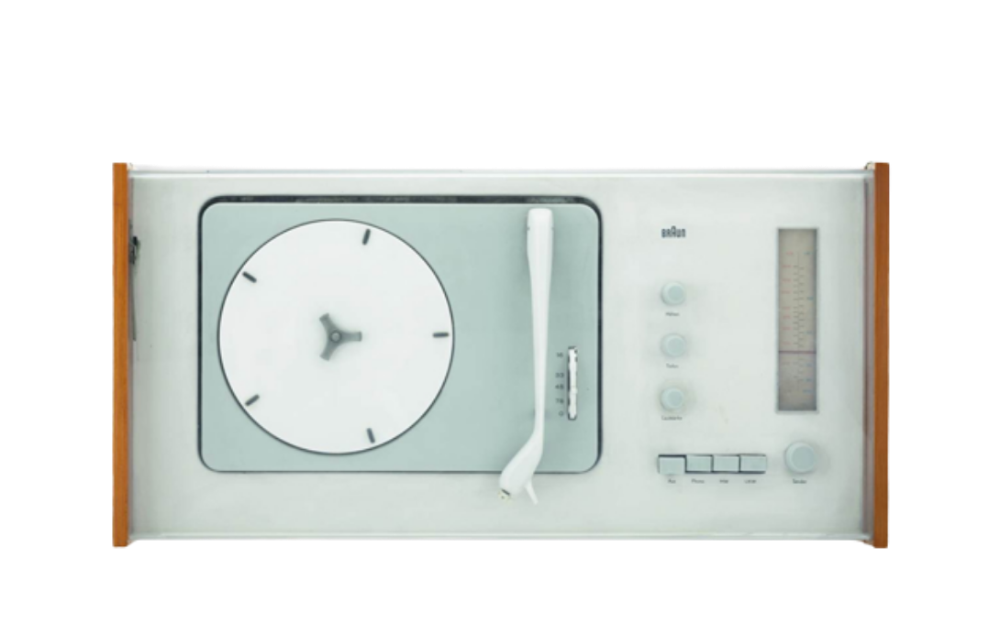
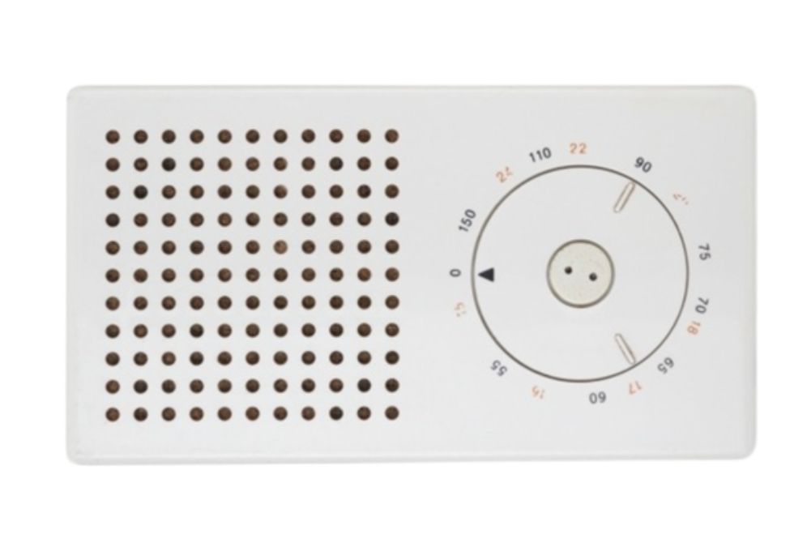
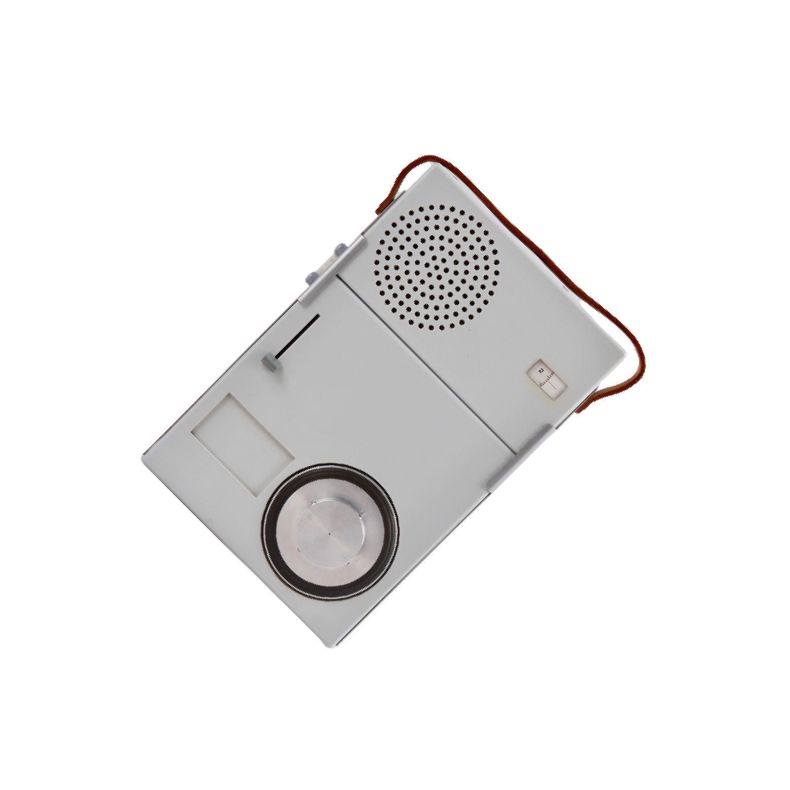

브라운 SK4 턴테이블 · 1956년
오디오 디자인의 역사를 새로 쓴 ‘SK4’.
간결하고 깔끔한 외형을 갖춘 라디오 겸 턴테이블로,
육중했던 기존의 디자인을 탈피해 콤팩트한 올인원 시스템으로 제작됐다.
아울러 전면에 있던 컨트롤 버튼을 모두 상단으로 옮기고,
투명한 아크릴 소재로 덮개를 만들었다.
제품이 처음 출시되었을 때 경쟁사에서는 아크릴 소재를 비꼬며 ‘백설 공주의 관’이라 불렸다고.
하지만 편리성 덕에 결국 빛을 보았고, 전 세계 음향기기 디자인의 표준이 됐다.
브라운 콤비 DL5 · 1957년
브라운의 초기 전기면도기 모델.
알프레드 뮐러(Alfred Müller)와 디터 람스가
동 디자인한 제품으로,
곡선형 모서리를 택해 그립감을 더욱 높였다.
이후 브라운 전기면도기의 기준으로 자리 잡았으며
현재 뉴욕 현대미술관에 소장되어 있다.

브라운 T3 포켓 라디오 · 1958년
혁신의 아이콘 애플(Apple)에도 원조가 있다.
한눈에 보기에도 아이팟과 쏙 빼닮은 본작은 1958년
처음 모습을 드러낸 ‘T3 포켓 라디오’.
전 애플 수석 디자이너 조너선 아이브(Jonathan Ive)는
“사실 디터 람스의 영향을 받았다.그를 존경한다”라고 고백하며
자신의 디자인이 디터 람스 제품의 오마주임을 밝힌 바 있다.
플라스틱 소재로 제작됐으며 용도에 따라 공간적 분리가 느껴질 수 있도록
간결한 형식을 지닌 제품.
더욱이 사용자가 뒤로 물러서면 소리의 주목도가 커지도록 설계됐다고.

브라운 TP1 · 1959년
‘T4’ 휴대용 라디오와 미니 턴테이블을 결합한 ‘TP1’.
디터 람스가 스스로 ‘최초의 워크맨’이라 불렀던 휴대용 스테레오 시스템으로,
오로지 직사각형과 원으로만 구성된 단순한 디자인을 뽐낸다.
더욱 놀라운 사실은 다른 턴테이블과 달리
아래에서 올라온 바늘에 의해 레코드가 재생된다는 점.
브라운의 기술력과 디자인 철학을 한 번에 엿볼 수 있는 제품이다.